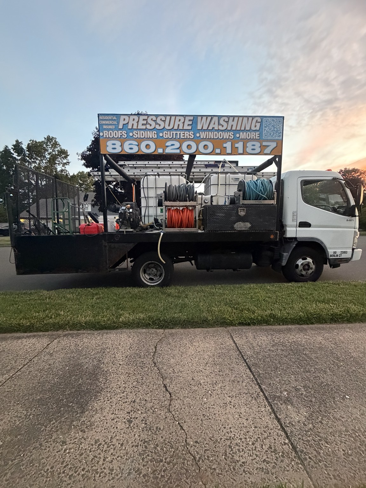

🏠
House Soft Washing
Low-pressure cleaning for siding, trim, stucco, brick and exterior steps.
We safely clean and restore your home using proven soft-washing techniques and property-safe methods.
We choose the right cleaning process for each surface instead of treating every project the same.
Low-pressure cleaning for siding, trim, stucco, brick and exterior steps.
Soft-wash treatment for black streaks, algae, moss and lichen.
Professional cleaning for patios, walkways, stone and durable exterior surfaces.
Exterior window cleaning for clearer glass and a brighter-looking property.
Deep cleaning for driveways, sidewalks, curbs and concrete surfaces.
Cleaning, joint sanding and sealing for refreshed, protected pavers.
Interior debris removal plus optional exterior oxidation treatment.
Careful cleaning to remove dirt, pollen and organic buildup.
Targeted treatment for many irrigation, fertilizer and metal-related stains.
Specialty cleaning for chalky oxidation on compatible exterior surfaces.
Surface-appropriate cleaning for wood, composite, vinyl and more.
Targeted cleaning for masonry, concrete and compatible surfaces.
Commercial cleaning for dumpster areas and service zones.
Exterior washing for storefronts, entrances, sidewalks and glass.
Recurring and project-based cleaning for communities and portfolios.
Exterior cleaning for offices, retail, multifamily and commercial properties.
Drag the slider to see this real transformation. Algae, mildew and organic buildup were removed using a professional low-pressure process.



Clear communication, dependable scheduling and careful work for homeowners, landlords, realtors, HOAs and property managers.
Soft washing uses low pressure and selected cleaning solutions to treat organic buildup on delicate exterior surfaces.
No. Roofs require a low-pressure treatment process rather than aggressive pressure washing.
Not always. Dark oxidation lines often require a separate gutter-brightening service.
Many exterior services can be completed without you being home when access and water arrangements are confirmed.